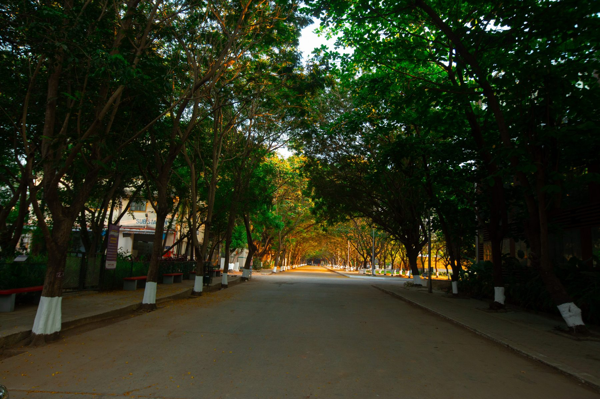
Most film schools give you a classroom. We give you a 30-acre campus you shoot inside, its glass-and-steel buildings, courtyards, corridors and grounds become your sets, backed by edit suites and a Qube-equipped theatre.
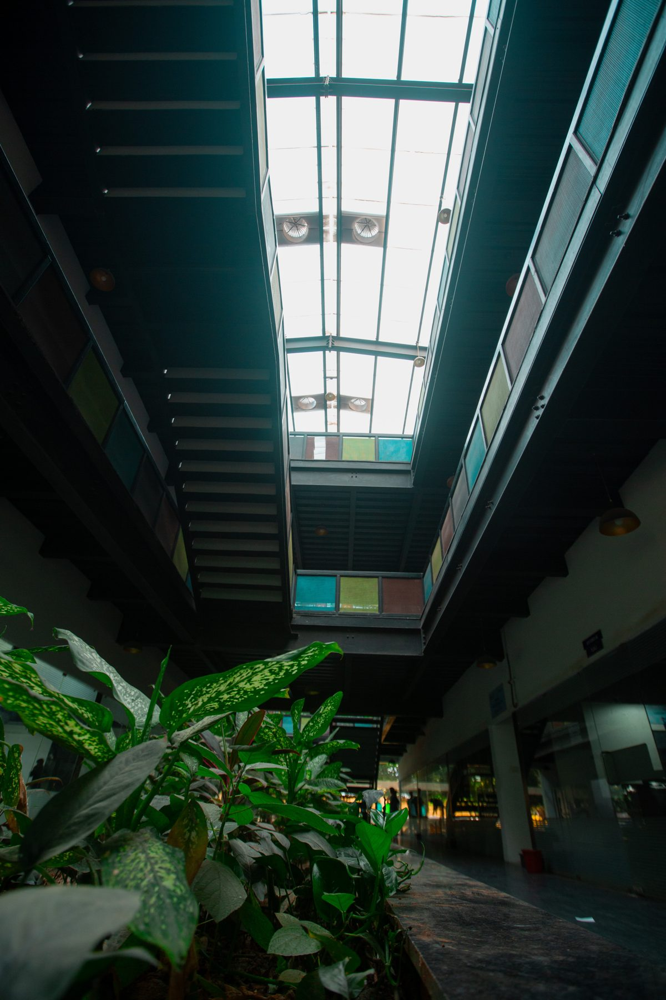
The campus itself is your backlot, modern glass architecture, atriums, sports grounds and open spaces that double as locations for almost any scene. Editing and DI suites on site. And a Qube-equipped screening theatre where your films premiere, the same technology powering cinemas worldwide.
The campus's varied spaces as your sets.
Striking modern backdrops to shoot against.
Edit, grade and finish on site.
Premiere your work in true cinema.
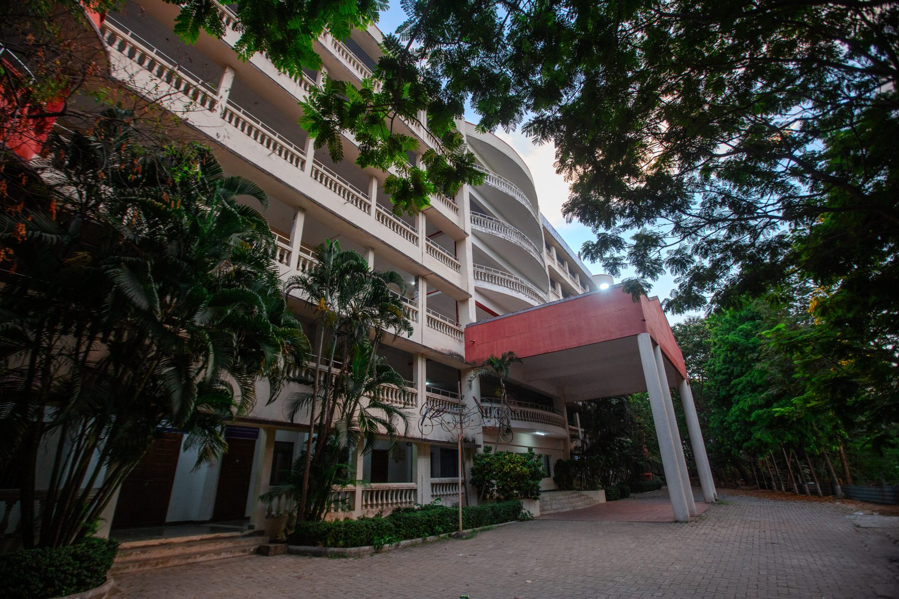
The campus sits within the Rajalakshmi Group's NAAC A++ accredited institution, world-class infrastructure and the institutional weight of a respected university behind your certification.
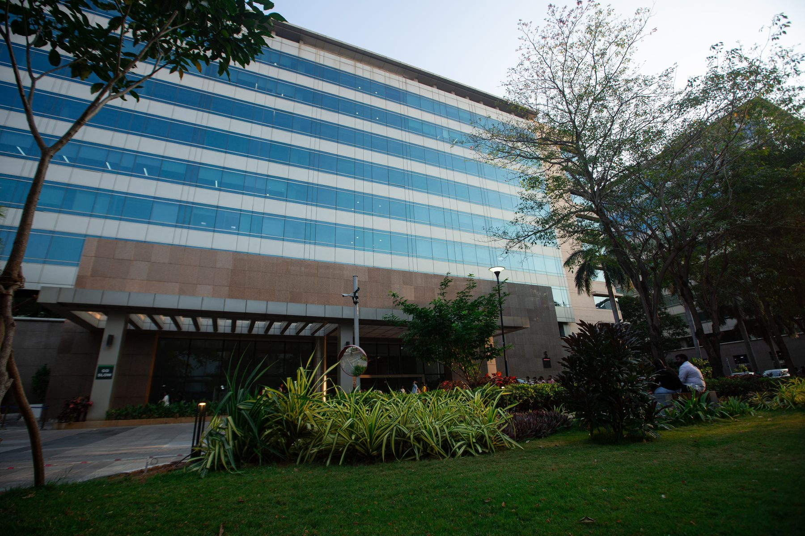
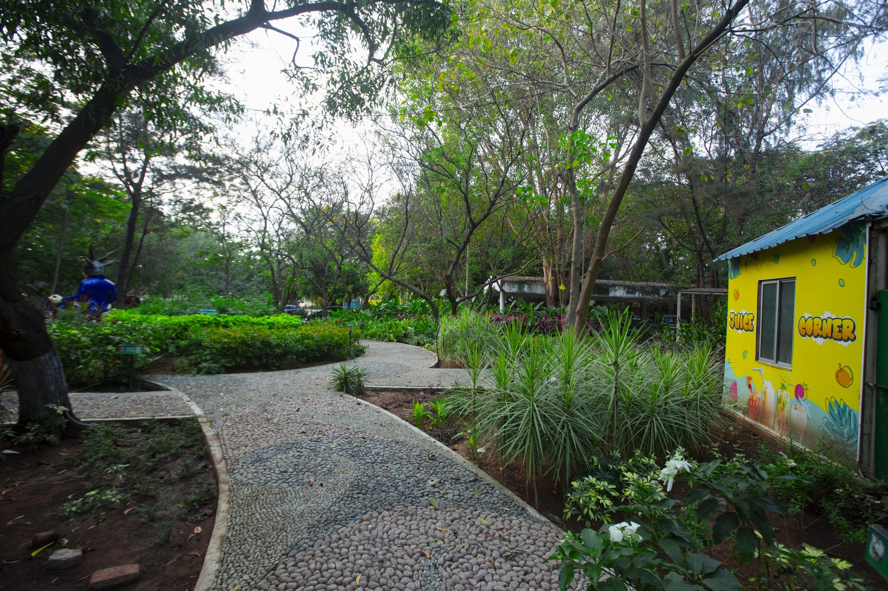
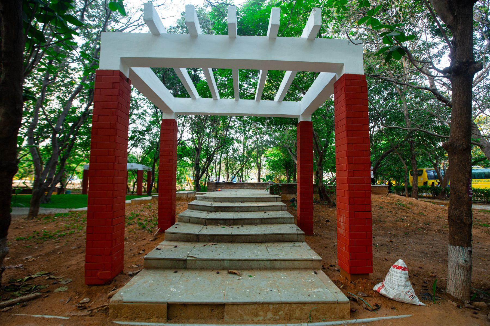
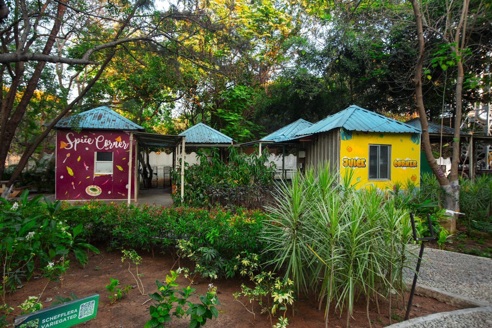
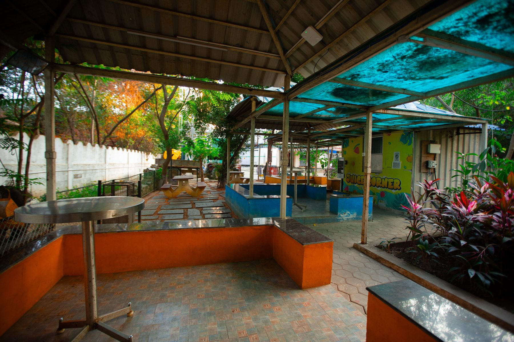
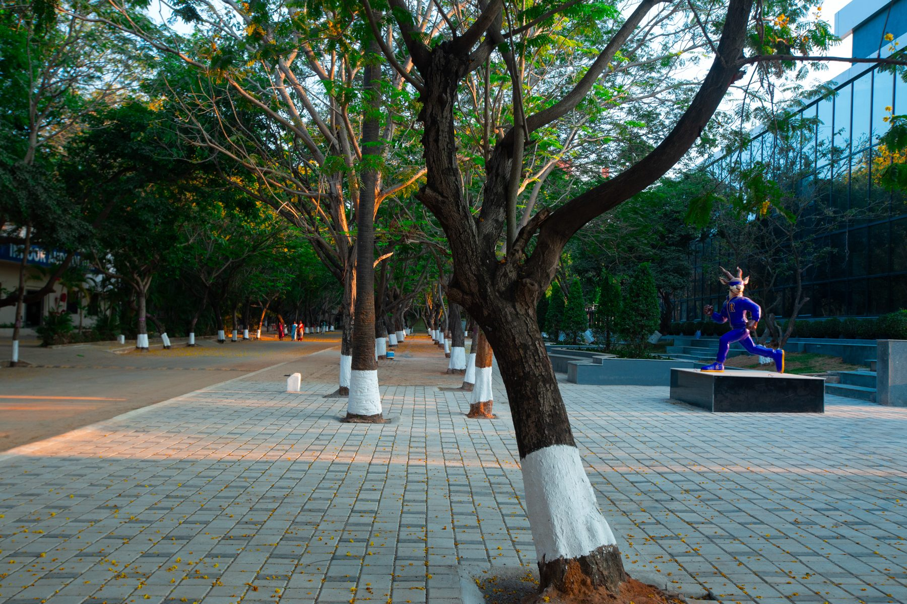
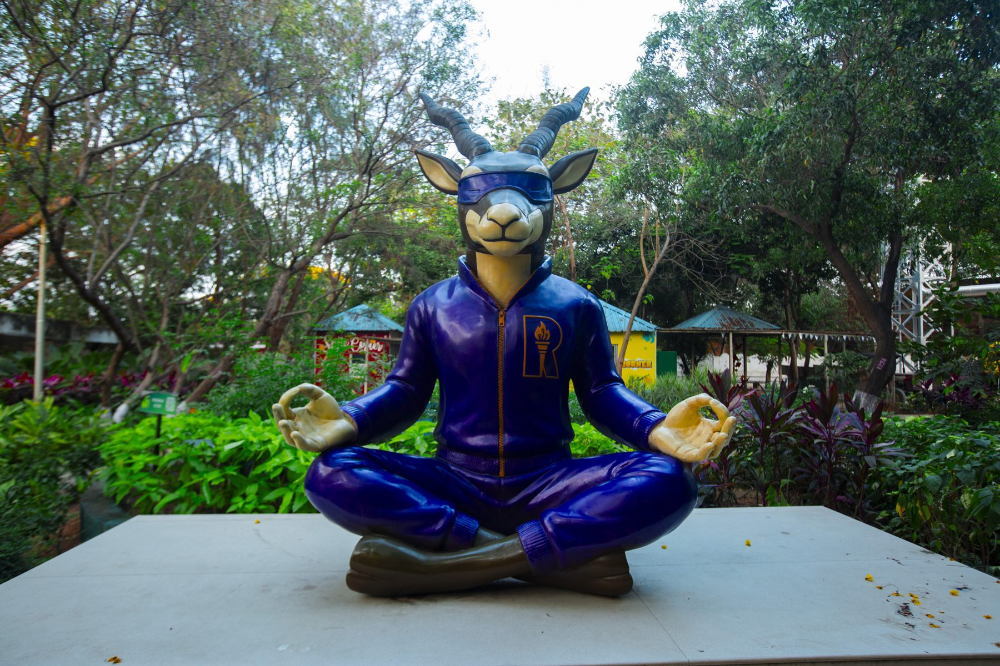
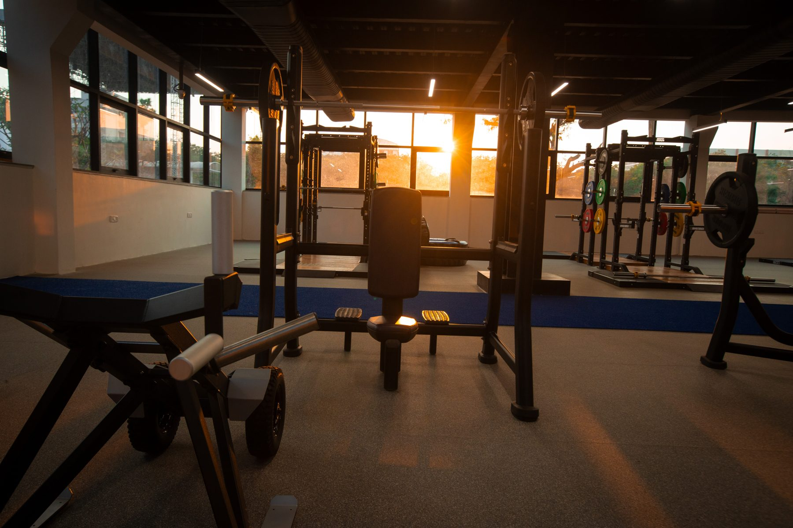
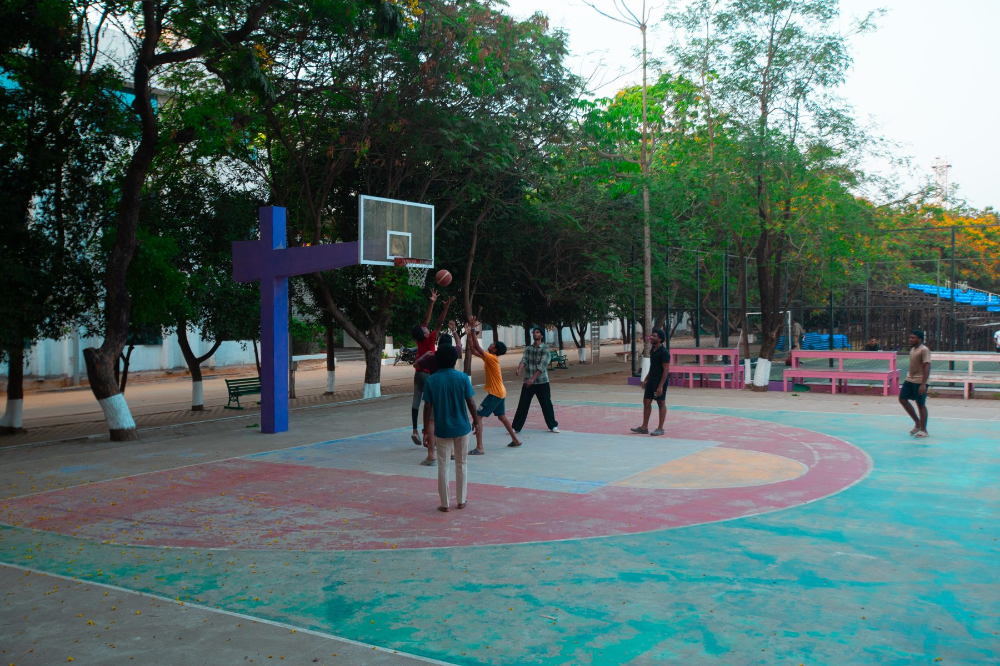
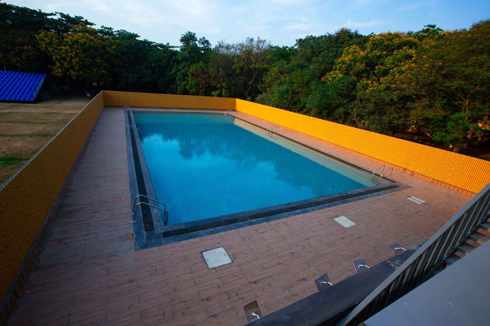
Train where films are actually made. Apply for the Class of 2027.